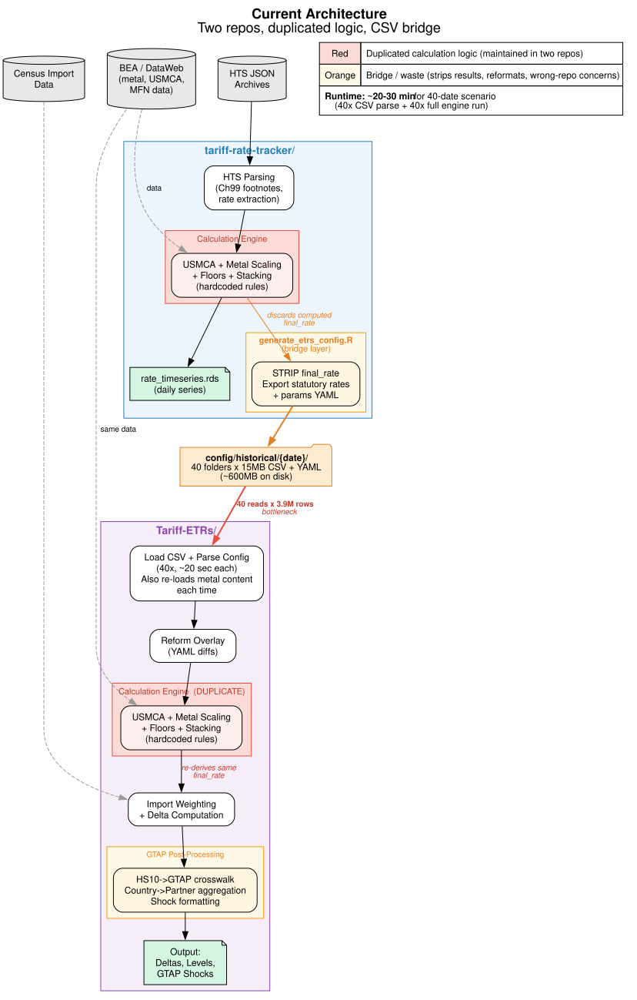
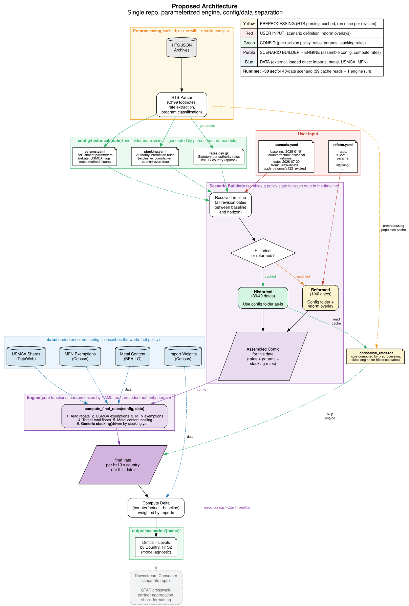

John Ricco — April 2026
We currently maintain two R repositories for tariff rate analysis: tariff-rate-tracker (which parses USITC data and computes tariff rates from source) and Tariff-ETRs (which runs counterfactual scenarios and computes deltas against a baseline). These repos duplicate about 800 lines of identical calculation logic—the same stacking rules, USMCA exemptions, metal content scaling, and floor rate logic, maintained independently in two places.
A bridge script (generate_etrs_config.R) connects the two. It takes the tracker's computed tariff rates, strips the final answer, and exports the raw per-authority statutory rates to dense CSV files. ETRs then reads those CSVs and re-derives the same final answer using its own copy of the calculation engine—40 times sequentially for a typical time-varying scenario.

Consolidate everything into tariff-rate-tracker as the single repository for tariff rate computation—both historical tracking and counterfactual analysis. Move GTAP-specific post-processing (sector crosswalks, partner aggregation, shock formatting) to whatever downstream repo runs the GTAP model. Archive Tariff-ETRs.
The redesign is built on three ideas:
1. Separate data from config. Import weights, metal content shares (from BEA), USMCA utilization rates (from DataWeb), and MFN exemption shares (from Census) are data—they describe the world and change annually at most. Tariff rates, adjustment parameters, and stacking rules are config—they describe policy and change with each Executive Order. Data is loaded once per run and shared across all dates. Config is per-revision, stored in its own folder.
2. Parameterize the stacking rules. Today the stacking logic is hardcoded in R: a case_when that knows "fentanyl stacks for China but not others" and "Section 301 is always cumulative." In the redesign, these rules live in a stacking.yaml file. Each authority declares its behavior (exclusive with 232 or cumulative) and any country-level overrides. The engine reads the YAML and applies generic logic—no authority names hardcoded. Adding a new tariff authority means adding a YAML entry, not editing R code.
3. Cache aggressively, re-compute only when needed. The HTS parser generates a config folder for each revision date. The engine then pre-computes final_rates.rds for each folder and caches it. When running a scenario, historical dates just read the cache (instant). Only dates with a reform overlay need to re-run the engine. For a typical 40-date scenario with one reform, that's 39 cache reads plus 1 engine run.

The system has four components. The first two are preprocessing (run once, cached). The second two are scenario analysis (run on demand).
HTS Parser — Reads USITC HTS JSON archives, extracts Chapter 99 footnotes, classifies tariff authorities, and generates a config folder for each revision date. This is the tracker's existing core capability. Each folder contains three files:
Engine — A set of pure R functions: compute_final_rates(config, data). Takes a rate table (from config) and product/country characteristics (from data), applies adjustments (USMCA, metal scaling, MFN exemptions, floor rates), then applies stacking rules (from stacking.yaml). Returns a final_rate per product and country. Used by both preprocessing (to populate the cache) and the scenario runner (for reformed dates).
Scenario Builder — Reads a scenario.yaml that defines a baseline date, a timeline, and any reforms. Resolves the timeline to a set of revision dates (by default, all historical revisions between baseline and horizon). For each date, assembles the appropriate config: either the historical folder as-is, or the historical folder with a reform overlay applied.
Delta Computation — For each date in the timeline, joins the assembled config with data, runs the engine (or reads the cache), and computes the delta (counterfactual rate minus baseline rate) weighted by import values. Writes country-level and HTS2-level output files.
A scenario is defined by a short YAML file. The keyword historical means "follow all revision dates from the tracker's timeline automatically"—no need to enumerate them. You only specify where you diverge from history:
A reform is a diff against a historical config folder. It can override rates, parameters, and/or stacking rules:
| Phase | What | Effort |
|---|---|---|
| 1 | Extract engine functions from ETRs, parameterize stacking rules into YAML, wire into tracker | ~3 days |
| 2 | Port scenario runner into tracker (scenario.yaml, reform overlays, delta computation, import weighting) | ~2 days |
| 3 | Verify output parity: tracker scenario output matches ETRs output for existing scenarios | ~1 day |
| 4 | Move GTAP post-processing to downstream repo. Delete generate_etrs_config.R. Archive Tariff-ETRs. | ~1 day |